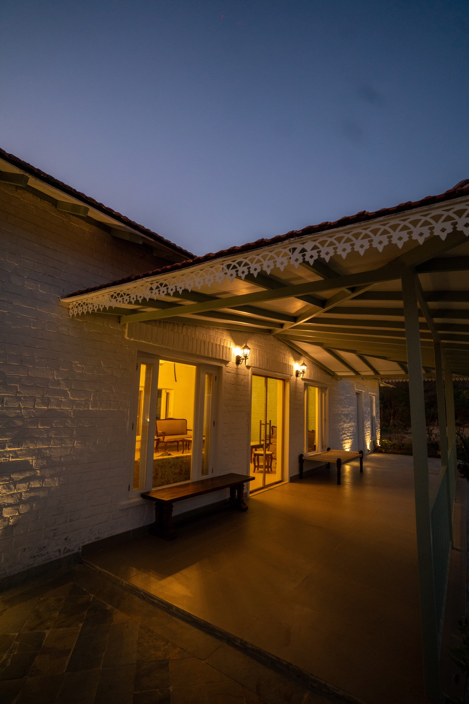

Rajputana craft
Heritage proportions, local materiality, antique pattern work, brass, cane, stone, and textile details.
About the estate
Kadamb Bagh is a luxury wildlife resort concept rooted in Sariska's rugged Aravalli landscape and Rajasthan's ceremonial grace. The architecture feels hand-laid and sun-warmed: white-brick arches, shaded verandahs, carved screens, courtyards, water, and foliage.
The experience is deliberately unhurried. Guests arrive for safari, but remember the sound of dusk, the glow of lamps on stone, the scent of wet earth, and the feeling of being quietly looked after.
Heritage proportions, local materiality, antique pattern work, brass, cane, stone, and textile details.
Naturalist-led experiences with attention to silence, distance, respect, and habitat awareness.
Sunrise tea, candlelit dinners, massage after safari, stargazing, and fireside storytelling.

Sariska as muse